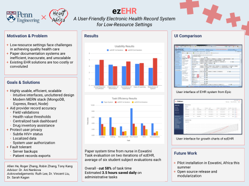
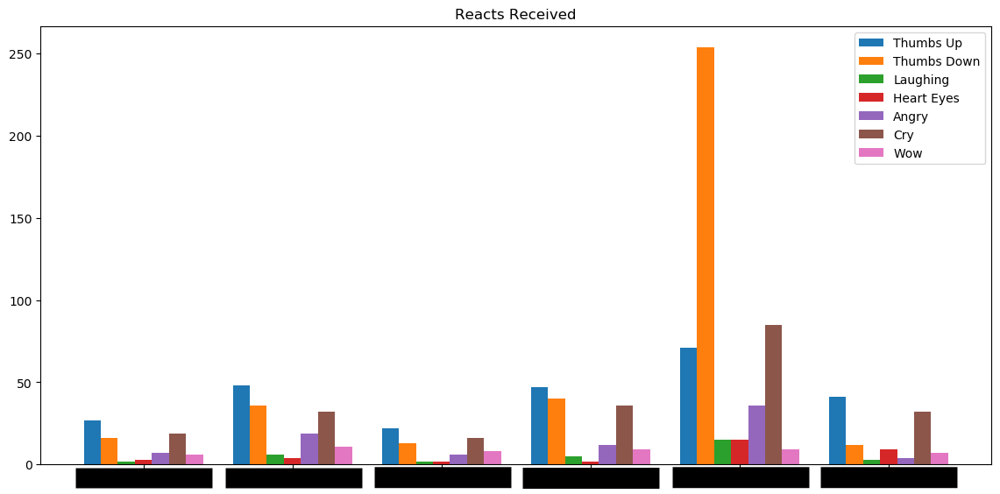
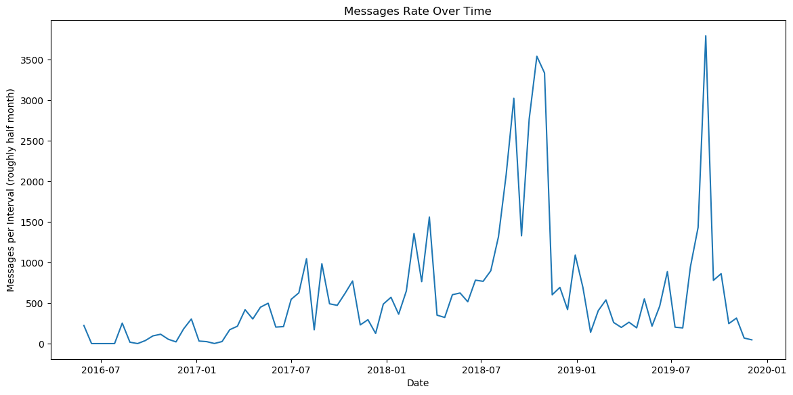

During our senior year of college, a couple of friends and I built a fully-fledged, custom EHR for nurses working for nonprofit Heart for Africa, located in Eswatini, Africa. The system would replace paper files, which became unwieldy as the number of children being cared for grew to the order of hundreds. In July of 2019, three of us hopped on a plane, suitcase equipped with a few electronics, to install the system onsite.
Check out the poster we made for class: 
On the software side, the product was built as a web application (MERN stack) with a nice modern UI. Intended to work with limited resources, in particular very unreliable internet access, the server is able to run on a Raspberry Pi right in the building. Connected to a router by ethernet, it provides local access from other devices (in our case, the nurses had personal laptops). Also, each day, a cron job attempts to upload a full backup of the data to the cloud (with highly variable success rate).
Despite unreliable internet access and non-static IP of the Pi, through a series of complicated connections and procedures we were able to ensure ourselves sporadic ssh access into the server, just good enough to allow us to send and install software updates and debug any issues.
As of updating this (Aug 2020), the entire project is around 50k lines of code, and we're still in contact with and supporting the nurses over there :D.
▲ back to top
Inspired by the question of just how many thumbs down reacts one of my friends received in our beloved group chat, I wrote some scripts to process and visualize some potentially interesting stats from Facebook Messenger data.
Example: the aforementioned group chat.  
{kind=link}
{kind=link}
▲ back to top
This website lol. Initially created to teach myself rudimentary HTML/CSS and because it seemed everyone else had one. Updated every now and then when I have nothing better to do.
▲ back to top